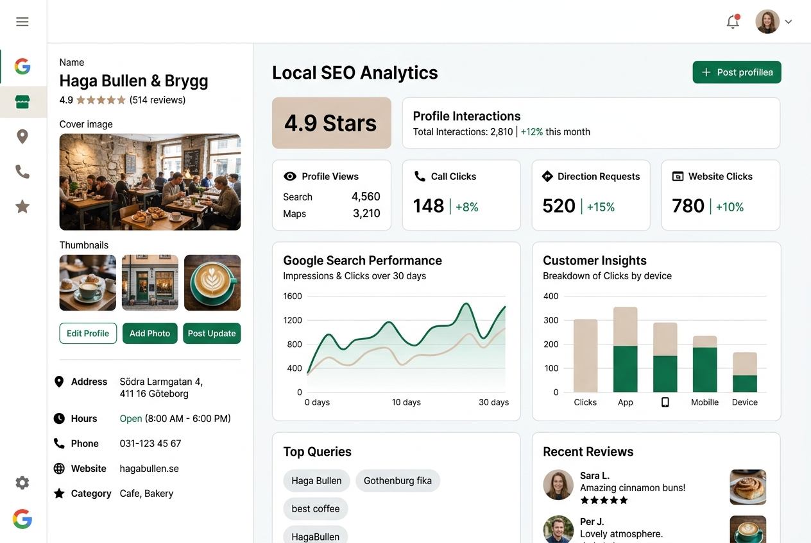
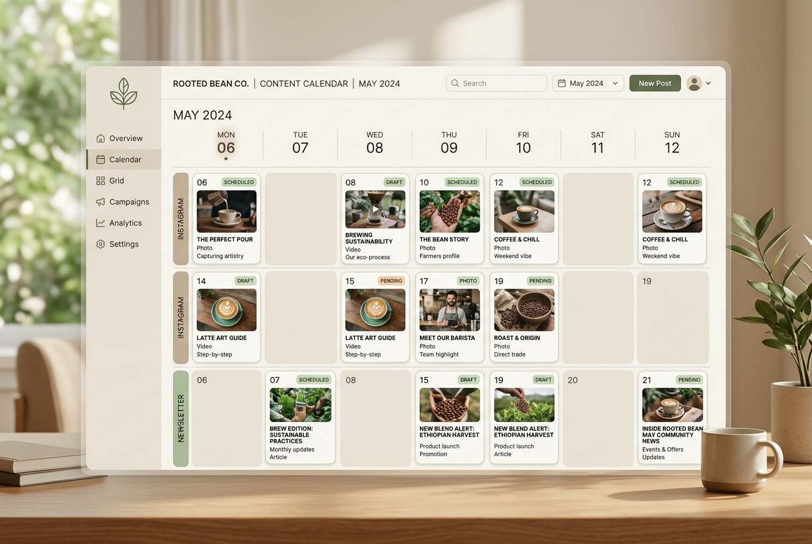
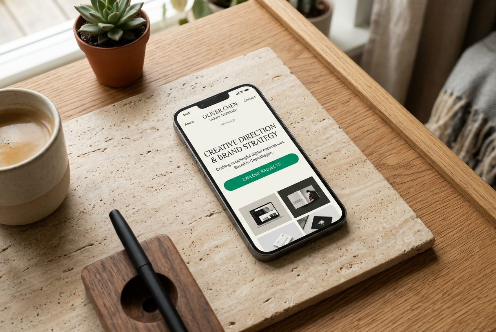

Lokal SEO & GoogleLokal synlighet för ett kafé
Kursuppgift: plan för Google-profil och sökord för ett fiktivt kafé i Göteborg.
Digital Marketing Specialist i Göteborg
Jag hjälper varumärken att bygga en stark närvaro där kunderna faktiskt finns – genom datadriven SEO, engagerande innehåll i sociala medier och en genomtänkt digital kundresa.
Kundförståelse i grunden. Digital strategi i praktiken.
Under min utbildning till Digital Marketing Specialist på IHM Business School fördjupar jag mig i konsten att förvandla digitala insikter till verkliga affärer. Jag drivs av att förstå målgruppens behov och omsätta det i optimerade kanaler som ger mätbara resultat.
Min bakgrund inom service har gett mig en skarp fingertoppskänsla för hur människor fattar beslut. Det spelar ingen roll hur snygg en kampanj är om den inte skapar genuint värde för kunden. Den insikten tar jag med mig in i varje analys, sökordsstrategi och innehållsplan.
Ett helhetsgrepp om den digitala kundresan för mätbara resultat.
Datadrivna sökordsanalyser, lokal sökoptimering och innehåll som driver organisk trafik och omvandlar sökare till kunder.
Målgruppsanpassade innehållsplaner och kreativa format som bygger varumärkeskännedom, engagemang och lojalitet över tid.
Konverterande e-postflöden, kampanjer och dataanalys som säkerställer att leads tas om hand och att marknadsinsatserna ger utväxling.
Konkreta kursarbeten och praktiska projekt som visar mitt sätt att arbeta.

Lokal SEO & GoogleKursuppgift: plan för Google-profil och sökord för ett fiktivt kafé i Göteborg.

InnehållsstrategiKursuppgift: pelare, kanaler och tolv inlägg för en hållbar kaffeprenumeration.

Digital produktionHandkodad med HTML, CSS och JavaScript, med AI som kodstöd.
Jag är alltid nyfiken på nya samarbeten, spännande projekt och möjligheter till anställning eller LIA/praktik. Hör av dig så tar vi ett förutsättningslöst samtal om hur jag kan bidra till er tillväxt.